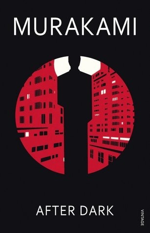
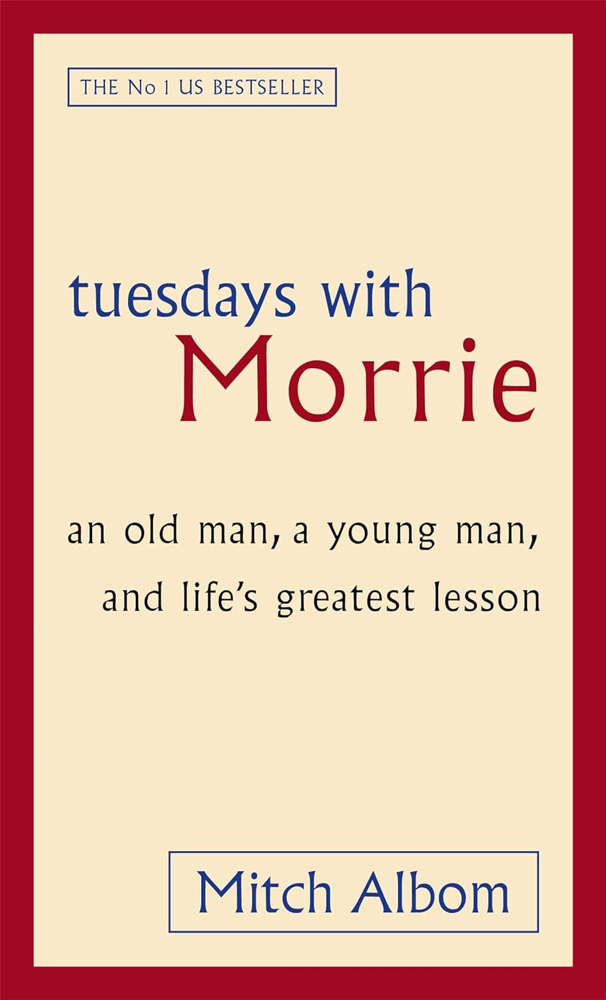

Past Interests
A month-by-month record of what I was reading, listening to, doing, and thinking about.
May 2026
Books

After Dark
Haruki Murakami

Tuesdays With Morrie
Mitch Albom
A Fine Balance
Rohinton Mistry
Music
🎵
Artist / Album
Genre or note
🎵
Artist / Album
Genre or note
Hobbies
🎨
Hobby Name
Short note
🎨
Hobby Name
Short note
Moments
📷
[ Caption — a place, a moment, a thing from this month. ]
[ A thought or memory from this month. ]
May 2026📷
[ Another moment worth keeping. ]
April 2026
Books
📖
Book Title
Author Name
📖
Book Title
Author Name
Moments
[ A thought or memory from April. ]
April 2026📷
[ A photo from April. ]